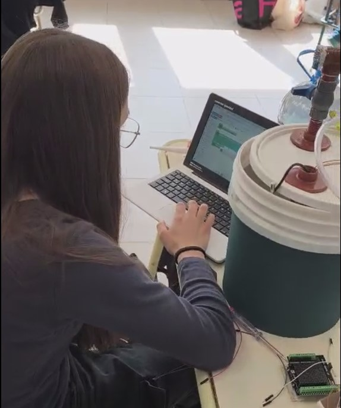
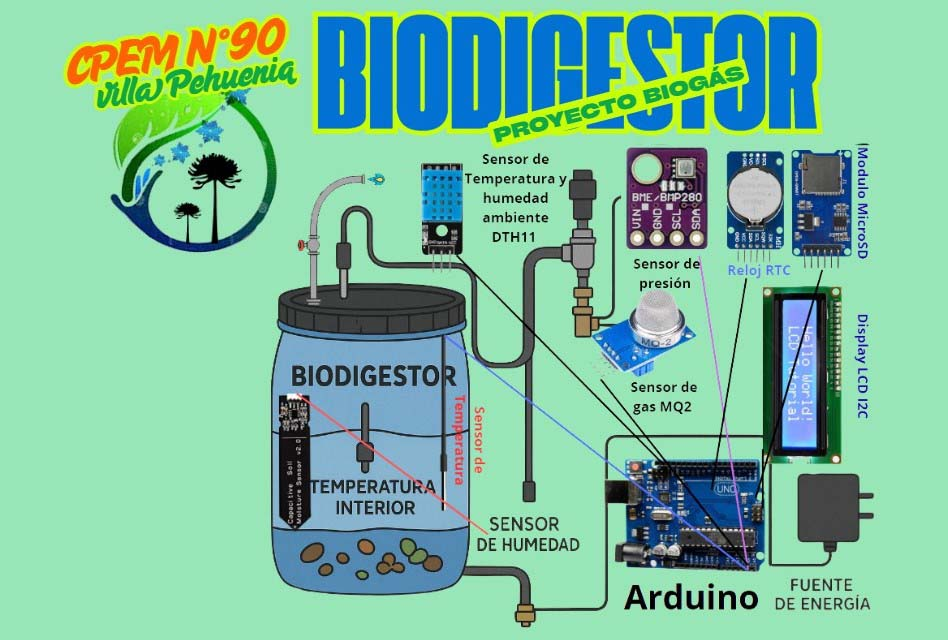
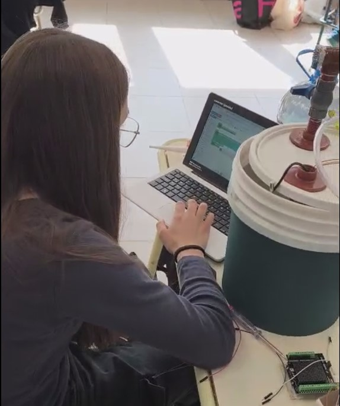
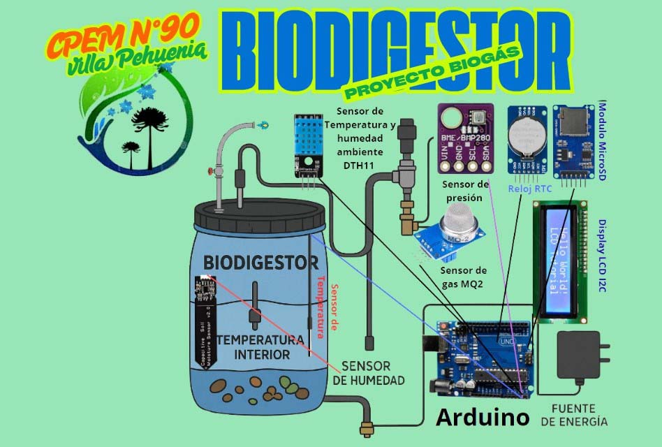

Nuestra Región y el porqué del Biogás
En la localidad donde vivimos, contamos con una red de gas GLP (Gas Licuado de Petróleo) la cual solamente llega a abastecer pequeños sectores de Villa Pehuenia, mientras que la mayoría de viviendas cercanas no cuentan con una fuente eficiente. Por eso, comercios, hogares e inclusive nuestra escuela, dependen del reparto de camiones de garrafas, tubos de gas o abastecimiento de zeppelin de gas.
En base a esta problemática es que surge este pequeño proyecto, que tiene como objetivo llegar a producir una fuente de gas eficiente, ecológica y funcional, que permita abastecer cocinas y sea una ayuda a la fuente de gas actual. Es por ello que surgió la idea de construir un biodigestor para producir biogás, resultado de la descomposición de materia orgánica, que es una forma ecológica y eficiente de generar gas.
Además, la producción de biogás representa una solución innovadora para el manejo de residuos orgánicos, permitiendo transformar un problema ambiental en una oportunidad energética. Así mismo, el proceso genera un subproducto valioso llamado digestato, que puede utilizarse como fertilizante orgánico de alta calidad.


 


